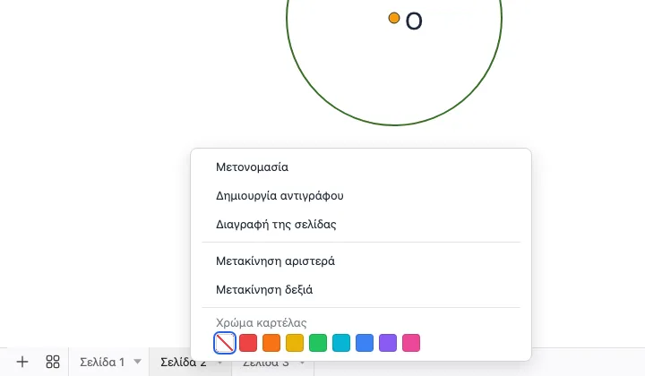

Άνοιγμα και αποθήκευση
Άνοιγμα
Το Άνοιγμα φορτώνει ένα αρχείο:
| Επέκταση | Προέλευση |
|---|---|
.dgo |
DocGeo, εγγενής μορφή |
.dgp |
DGPad, εισαγόμενο |
.ggb |
GeoGebra, εισαγόμενο |
Μπορείτε επίσης να σύρετε το εικονίδιο του αρχείου στη σελίδα, στον επεξεργαστή όπως και στο πρόγραμμα προβολής.
Το σχήμα που ανοίγει αντικαθιστά το τρέχον σχήμα και αδειάζει το ιστορικό αναίρεσης.
Ένα σχήμα στο διαδίκτυο ανοίγει και με σύνδεσμο (βλ. Κοινοποίηση σχήματος με σύνδεσμο).
Το μενού Αρχείο προσφέρει επίσης Άνοιγμα… (Ctrl O) και Νέο σχήμα, που ξεκινά από ένα κενό σχήμα.
Πρόσφατα έγγραφα
Το Αρχείο › Άνοιγμα πρόσφατου εγγράφου δείχνει τα δέκα τελευταία σχήματα που ανοίχτηκαν ή αποθηκεύτηκαν, πρώτα το πιο πρόσφατο: στο Chrome και στο Edge, τα αρχεία του υπολογιστή· σε όλα τα προγράμματα περιήγησης, τα σχήματα που ανοίχτηκαν από σύνδεσμο. Το πρόγραμμα περιήγησης μπορεί να ζητήσει ξανά άδεια ανάγνωσης του αρχείου. Ένα αρχείο που στο μεταξύ μετακινήθηκε, μετονομάστηκε ή διαγράφηκε επισημαίνεται και αφαιρείται από τη λίστα. Η Εκκαθάριση λίστας την αδειάζει.
Ελλιπής εισαγωγή
Ένα μη υποστηριζόμενο στοιχείο του DGPad ή του GeoGebra αγνοείται μαζί με τα εξαρτώμενά του· η υπόδειξη δίνει τη λίστα («Δεν εισήχθη: …»). Λεπτομέρειες στην Εισαγωγή από DGPad και GeoGebra.
Αποθήκευση
Το , το
Αρχείο › Αποθήκευση ή το Ctrl
S αποθηκεύει το σχήμα σε .dgo. Η προβολή
(ζουμ, προσανατολισμός 3D, σύστημα συντεταγμένων) αποθηκεύεται.
Στο Chrome και στο Edge, το DocGeo αποθηκεύει όπως μια εφαρμογή:
η πρώτη αποθήκευση ρωτά πού θα μπει το αρχείο, οι επόμενες το
αντικαθιστούν χωρίς ερώτηση. Ένα σχήμα .dgo που
άνοιξε με το ή αφέθηκε στη σελίδα
αποθηκεύεται στο δικό του αρχείο· το πρόγραμμα περιήγησης ζητά
μία φορά άδεια για να το τροποποιήσει. Ένα σχήμα DGPad ή
GeoGebra δεν αντικαθίσταται ποτέ: η πρώτη αποθήκευσή του
δημιουργεί αρχείο .dgo. Το
Αποθήκευση ως… (Ctrl
Shift S) επιλέγει άλλο αρχείο.
Το όνομα του αρχείου εμφανίζεται στο τέλος της γραμμής μενού· μια κόκκινη κουκκίδα δείχνει μη αποθηκευμένες αλλαγές. Χάνεται με την αποθήκευση ή με αναίρεση μέχρι την αποθηκευμένη κατάσταση. Η μετακίνηση ή το ζουμ της προβολής δεν μετράει ως αλλαγή.
Σε άλλα προγράμματα περιήγησης (Firefox, Safari), ή όταν το
DocGeo είναι ενσωματωμένο σε άλλη σελίδα, η αποθήκευση κατεβάζει
το σχήμα με το όνομα του ανοιχτού σχήματος (figure.dgo
για νέο σχήμα).
Το .dgo είναι η μόνη μορφή αποθήκευσης: το άνοιγμα
ενός σχήματος DGPad ή GeoGebra και η αποθήκευσή του το
μετατρέπει.
Ανάκτηση μη αποθηκευμένου σχήματος
Όσο ένα σχήμα έχει μη αποθηκευμένες αλλαγές, το DocGeo κρατά ένα αντίγραφό του στο πρόγραμμα περιήγησης. Αν ο επεξεργαστής κλείσει πριν αποθηκευτεί (παράθυρο κλεισμένο κατά λάθος, κατάρρευση), το σχήμα εμφανίζεται, με ημερομηνία, κάτω από τα Μη αποθηκευμένα σχήματα στην αρχή του Αρχείο › Άνοιγμα πρόσφατου εγγράφου: αν το επιλέξετε, επιστρέφει, σημειωμένο ακόμη ως μη αποθηκευμένο. Τα αντίγραφα αυτά κρατιούνται δεκατέσσερις ημέρες, το πολύ δέκα· η Εκκαθάριση λίστας τα διαγράφει επίσης.
Το αντίγραφο μένει στο πρόγραμμα περιήγησης αυτού του υπολογιστή: δεν αντικαθιστά την αποθήκευση. Τίποτα δεν κρατιέται όταν το DocGeo είναι ενσωματωμένο σε άλλη σελίδα.
Βιβλία εργασίας: πολλές σελίδες
Ένα βιβλίο εργασίας συγκεντρώνει πολλά σχήματα, τις σελίδες του,
σε ένα μόνο αρχείο .dgo. Οι καρτέλες του, κάτω από
το σχήμα, δείχνουν μία σελίδα κάθε φορά.

- Το Αρχείο › Νέα σελίδα προσθέτει μια κενή σελίδα μετά τις άλλες: το τρέχον σχήμα γίνεται η σελίδα 1. Στη συνέχεια, το κουμπί + στην αρχή των καρτελών κάνει το ίδιο, και το διπλανό κουμπί εμφανίζει όλες τις σελίδες.
- Ένα δεξί κλικ σε μια καρτέλα, ή στο βέλος της ▾, ανοίγει το μενού της σελίδας: Μετονομασία, Δημιουργία αντιγράφου, Διαγραφή της σελίδας, Μετακίνηση αριστερά ή Μετακίνηση δεξιά, και το Χρώμα καρτέλας.
- Ένα διπλό κλικ σε μια καρτέλα μετονομάζει τη σελίδα της (Enter επιβεβαιώνει, Esc ακυρώνει)· δύο σελίδες δεν μπορούν να έχουν το ίδιο όνομα. Μια καρτέλα που σύρεται αλλάζει θέση.
- Οι σελίδες είναι ανεξάρτητες: η καθεμία έχει τα αντικείμενά της, τους άξονές της, τις μακροεντολές της και το ιστορικό αναίρεσής της, που το ξαναβρίσκετε όταν επιστρέφετε σε αυτήν. Ένας τύπος μπορεί ωστόσο να διαβάσει μια τιμή άλλης σελίδας (Ανάγνωση άλλης σελίδας). Οι καθολικές των προγραμμάτων είναι όμως κοινές σε όλο το βιβλίο εργασίας (Μπλοκ και χελώνα).
- Η αποθήκευση γράφει όλο το βιβλίο εργασίας, κάθε σελίδα όπως την αφήσατε· η σελίδα που εμφανίζεται είναι αυτή που θα ανοίξει. Ένα βιβλίο εργασίας με μία μόνο σελίδα γίνεται ξανά απλό σχήμα.
Το πρόγραμμα προβολής δείχνει επίσης τις καρτέλες. Ένα σχήμα ενσωματωμένο σε ιστοσελίδα δείχνει μόνο τη σελίδα που εμφανιζόταν κατά την αποθήκευση.
Κοινοποίηση σχήματος με σύνδεσμο
Ένα σχήμα αναρτημένο στο διαδίκτυο ανοίγει με σύνδεσμο: τη
διεύθυνση του επεξεργαστή, ακολουθούμενη από
?url= και τον σύνδεσμο του αρχείου, επικολλημένο
όπως είναι.
https://doctools.org/apps/docgeo/editor.html?url=https://www.dropbox.com/scl/fi/…/thales.dgo?rlkey=…&dl=0Ο σύνδεσμος του αρχείου μπορεί να προέρχεται από:
| Υπηρεσία | Σύνδεσμος προς αντιγραφή |
|---|---|
| Google Drive | σύνδεσμος κοινοποίησης, πρόσβαση «Οποιοσδήποτε έχει τον σύνδεσμο» |
| Dropbox | σύνδεσμος κοινοποίησης |
| OneDrive |
σύνδεσμος κοινοποίησης προσωπικού λογαριασμού
(https://1drv.ms/u/c/…)
|
| Nextcloud | δημόσιος σύνδεσμος κοινοποίησης, χωρίς κωδικό πρόσβασης |
| Ιστότοπος |
διεύθυνση του αρχείου (.dgo,
.dgp ή .ggb)
|
Η μορφή αναγνωρίζεται από το περιεχόμενο του αρχείου, και το
όνομά του εμφανίζεται στο τέλος της γραμμής μενού. Το αρχείο στο
διαδίκτυο δεν τροποποιείται ποτέ: η αποθήκευση δημιουργεί ένα
αρχείο .dgo στον υπολογιστή.
Το ?url= μπαίνει τελευταίο στη διεύθυνση: ό,τι
ακολουθεί ανήκει στον σύνδεσμο
(editor.html?lang=en&url=…).
Ενσωμάτωση σχήματος σε ιστοσελίδα
Ένα σχήμα δημοσιευμένο στο διαδίκτυο μπορεί επίσης να εμφανίζεται, και να μετακινείται, σε ιστοσελίδα: βλ. Ενσωμάτωση σε ιστοσελίδα.
Γλώσσα
Το DocGeo παίρνει τη γλώσσα του προγράμματος περιήγησης· το
?lang= την επιβάλλει (ar,
de, el, en,
es, fr, hi,
it, nl, pt,
zh, zh-TW). Η γλώσσα ορίζει επίσης τα
ονόματα των εντολών (Μέσο,
Milieu…)· τα αγγλικά ονόματα γίνονται
κατανοητά σε όλες τις γλώσσες.